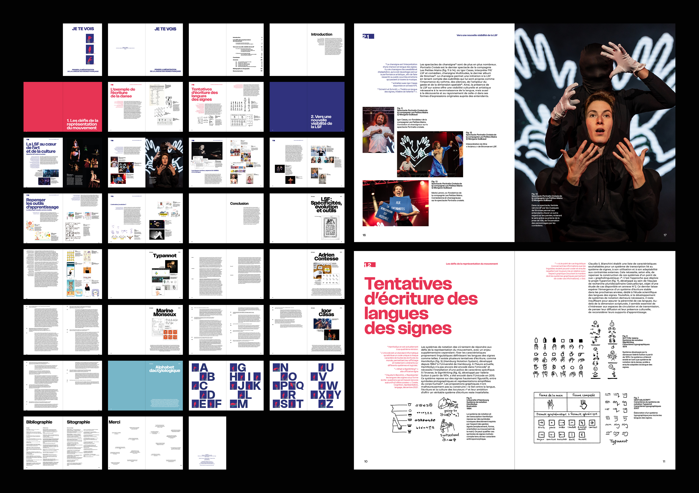
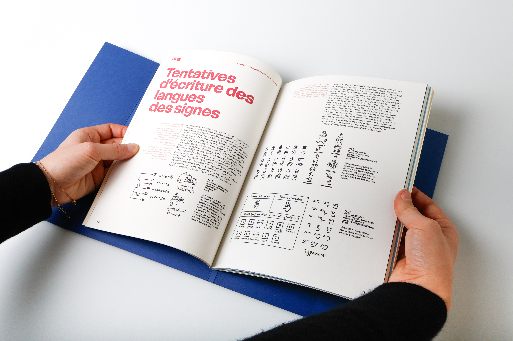
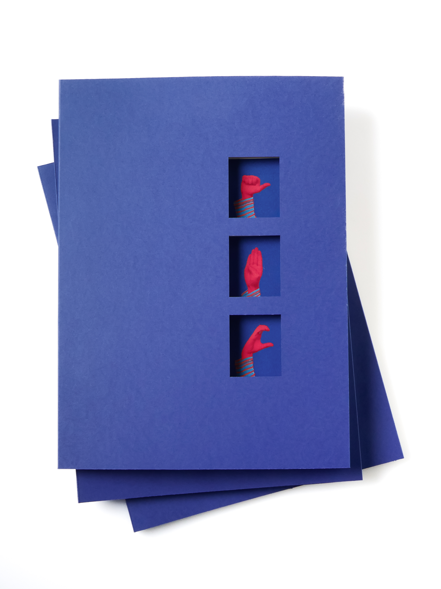
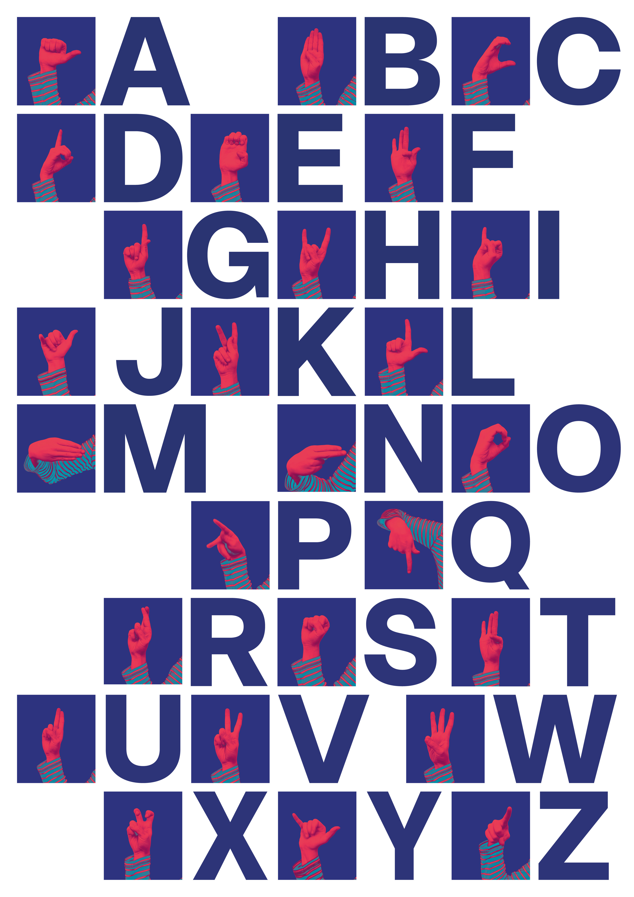
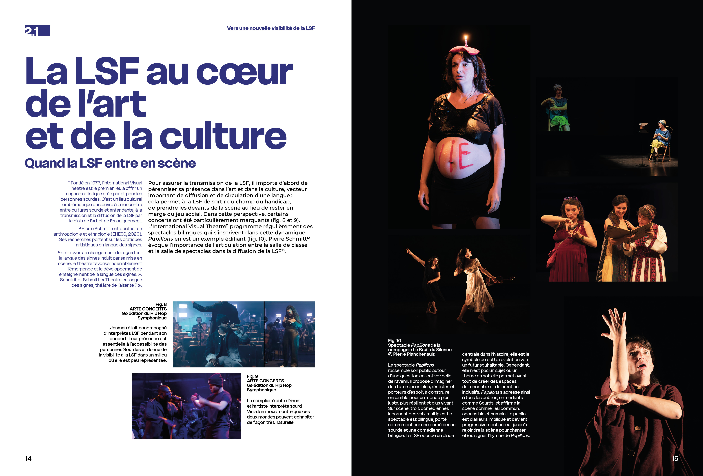
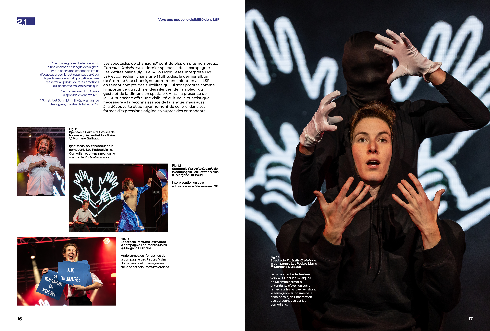

Je te vois
Discipline
Recherches, Écriture et Design éditorial
Année
2026
Contexte
La reconnaissance de la Langue des Signes Française comme langue et son enseignement structuré sont récents. Peu de supports médiatiques et pédagogiques intègrent une réelle réflexion graphique sur la LSF. Ce mémoire de troisième année d'études explore le rôle du design graphique dans cette médiatisation notamment sur les défis de la représentation du mouvement.





